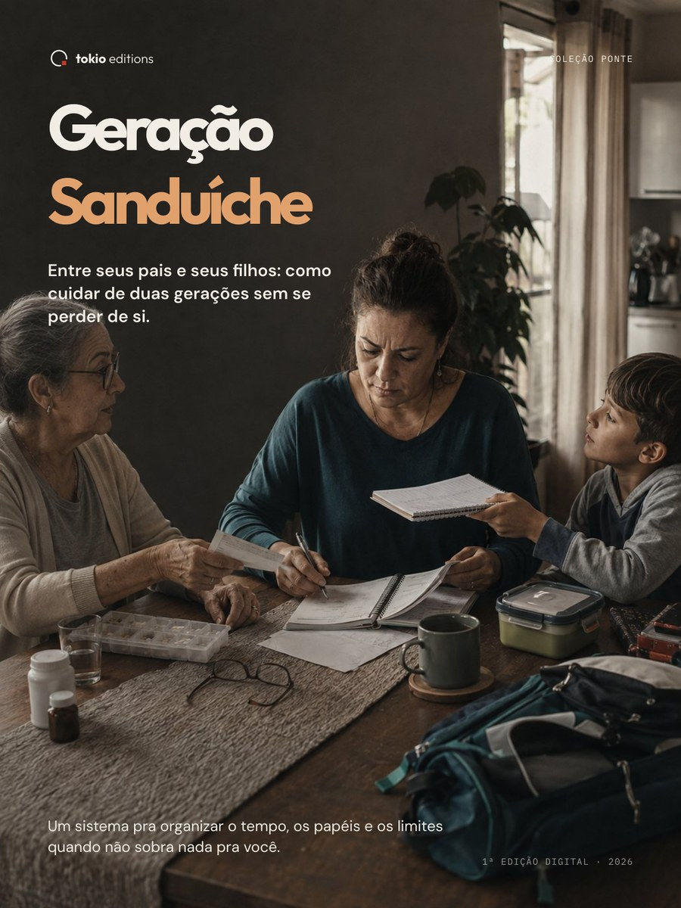

Primeiro, entender.
Antes da técnica, mostramos o território e as decisões que realmente importam.
2 coleções · 3 títulos · 4 edições
Guias digitais para começar novos hobbies, atravessar mudanças e chegar ao primeiro resultado — com clareza, método e sem conhecimento prévio.
Nossa tese editorial
Um bom guia não exige que você já saiba o básico. Ele organiza o caminho, traduz o que parece complicado e mostra qual é o próximo passo.
Antes da técnica, mostramos o território e as decisões que realmente importam.
Explicamos o vocabulário sem infantilizar quem está começando.
Cada capítulo aproxima o leitor de uma ação concreta e verificável.
Escolha por onde começar
Cada coleção organiza um tipo de transformação. Cada guia entrega um caminho que você consegue seguir sozinho.
Coleção Ponte
Guias para lidar com transições da vida cotidiana com mais autonomia, cuidado e organização.
Um guia para usar o celular com autonomia, no seu tempo e sem medo de errar.

PortuguêsOrganize tempo, papéis e limites quando duas gerações precisam de você.
Coleção Mundo em Escala
Guias para transformar curiosidade pelo modelismo em projetos concluídos, do primeiro passo em diante.
 Português
Português
Do primeiro kit ao primeiro modelo concluído, com método claro e sem jargão.
 Edición en español
Edición en español
Del primer kit al primer modelo terminado, con un método claro para principiantes.
Como fazemos
Cada guia passa por um percurso editorial visível. O objetivo não é acumular páginas: é fazer cada página trabalhar pelo leitor.
O caminho é verificado antes da primeira linha.
O assunto vira uma sequência clara de decisões e ações.
Texto, imagem e diagramação trabalham como um só sistema.
Conteúdo, leitura e entrega são testados antes da publicação.
Antes de escolher
Os produtos são digitais e entregues em PDF. Alguns títulos incluem materiais complementares preenchíveis ou preparados para impressão.
Após a confirmação do pagamento, a plataforma de venda envia as instruções de acesso para o e-mail informado na compra.
Não. Os guias são estruturados para quem está começando ou retomando um assunto depois de muito tempo.
Sim. Cada edição possui sua própria condição de garantia, informada com clareza na respectiva página de venda.
As condições, moedas disponíveis e conversão são apresentadas no checkout de cada produto. Escala Cero é a edição em espanhol para a América Latina.
Selo editorial contemporâneo
A tokio editions publica guias digitais que decompõem assuntos complexos em percursos claros, verificáveis e possíveis de começar sozinho.
Somos o braço editorial da TOKIO Studio: parte do mesmo ecossistema, com uma linguagem criada para quem lê.